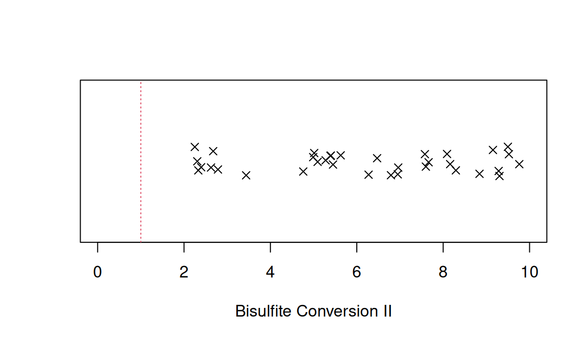
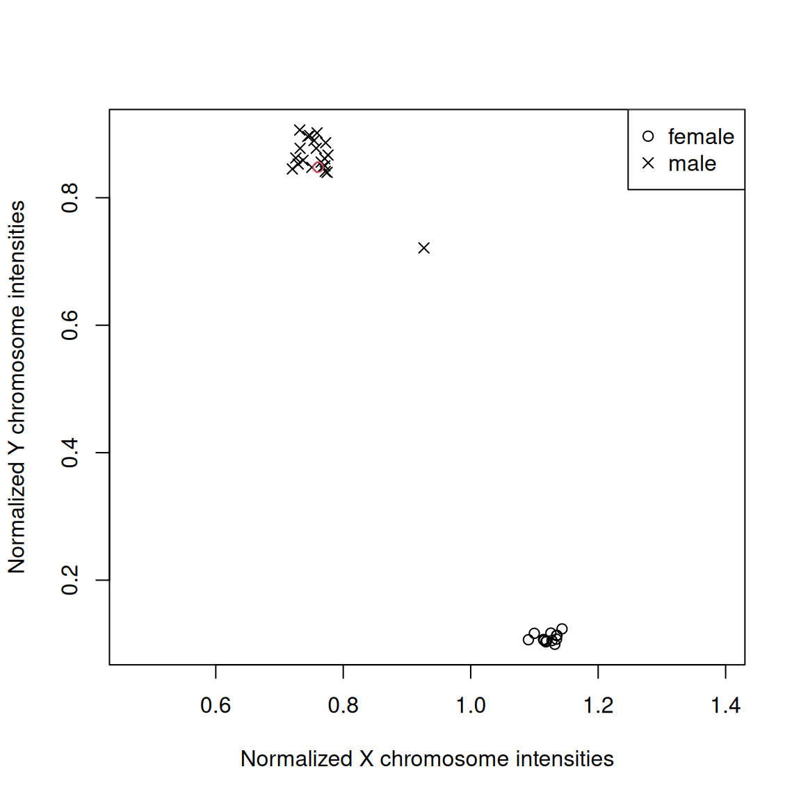
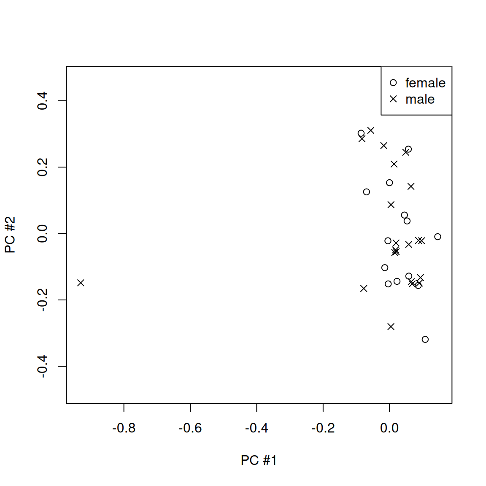
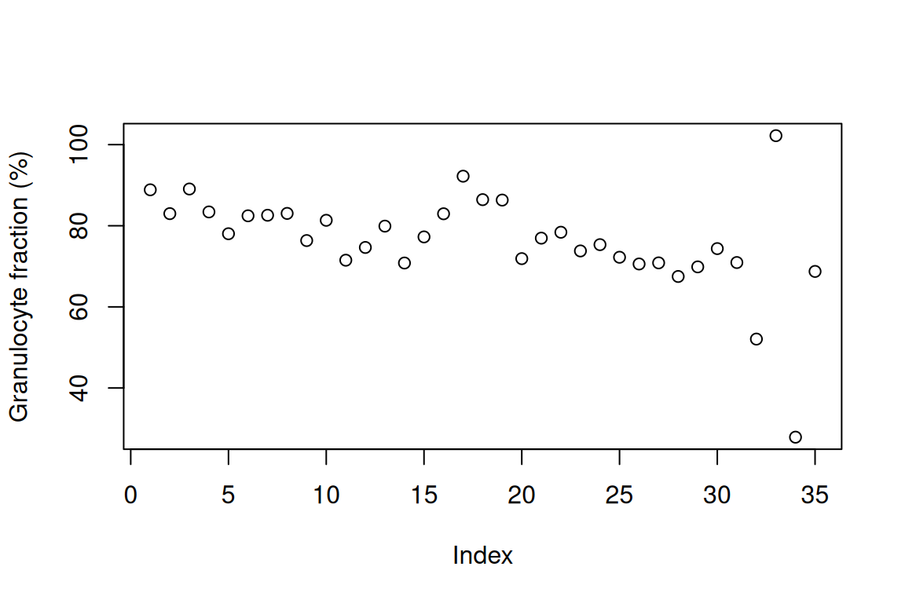

Recommended Work Flow
Jonathan Heiss
2025-06-20
exemplary_ewas.RmdThis vignette exemplifies how to use the ewastools
package to clean and pre-process DNA methylation data. After loading the
required packages, analysis would start with gathering the phenotype
data. In this example using a public dataset from the Gene Expression Omnibus
repository, the phenotype data is stored in a file named
pheno.csv
pheno = fread("pheno.csv")
head(pheno)
## gsm sex smoker
## <char> <char> <char>
## 1: GSM2260480 m smoker
## 2: GSM2260482 m smoker
## 3: GSM2260485 m smoker
## 4: GSM2260486 m smoker
## 5: GSM2260487 f smoker
## 6: GSM2260488 m smokerpheno contains a column gsm, which in this
case represents also the prefix of the .idat file names. Usually,
however, the file names are a combination of the Sentrix barcode,
Sentrix position and color channel and will look something like this
200379120004_R01C01_Red.idat for the .idat containing the
red color channel, and analogously
200379120004_R01C01_Grn.idat for the .idat containing the
green color channel. read_idats can be used to import
methylation data. It’s first argument is a character vector containing
the absolute or relative file paths and names but without the color
channel and file extension,
e.g. C:/folder/subfolder/200379120004_R01C01. Both red and
green .idat files of a particular sample need to be in the same
folder.
meth = read_idats(pheno$gsm,quiet=TRUE) # `quiet=TRUE` supresses the progress bar
## [1] 622399The entire pre-processing, including filtering by detection p-values, dye-bias correction and conversion into beta-values, can be done in one line …
beta = meth %>% detectionP %>% mask(0.01) %>% correct_dye_bias %>% dont_normalize… but we will break it up in order to describe the various steps.
The first step should be to filter out unreliable data points which
result from low fluorescence intensities. These can be the result of
insufficiently amplified DNA. Filtering is done using so-called
detection p-values, calculated from comparing
fluorescence intensities to a noise distribution. Probes below a chosen
significance threshold are deemed detected, otherwise undetected. The
conventional way of calculating these p-values, as implemented in the
GenomeStudio software, lets many unreliable data points pass,
demonstrated by the fact that many probes targeting the Y chromosome are
classified as detected. ewastools implements an improved
estimation of noise levels that improves accuracy.
meth %<>% detectionP
P.new = meth$detPFor easy comparison a function detectionP.neg() is
provided, which estimates background the conventional way.
P.neg = meth %>% detectionP.neg %$% detPWe can see the improved accuracy by counting the number of Y chromosome probes that are called detected for a male and a female samples.
chrY = meth$manifest[chr=='chrY',index]
male = which(pheno$sex=="m")[1]
female = which(pheno$sex=="f")[1]
P.neg = P.neg[chrY,c(male,female)]
P.new = P.new[chrY,c(male,female)]
P.neg = colSums(P.neg<0.01,na.rm=TRUE)
P.new = colSums(P.new<0.01,na.rm=TRUE)
names(P.neg) = c("male","female")
names(P.new) = c("male","female")Using the conventional detection p-value, for the female sample 402 Y chromosome probes are called detected, a number close to all 416 Y chromosome probes as for the male sample.
P.neg
## male female
## 416 402Using the improved method gives a much more accurate result with all 416 Y chromosome probes classified as detected for the male sample, but only 402 probes classified as detected for the female sample. More information can be found in Heiss and Just, 2019.
P.new
## male female
## 416 73We used a significance threshold of 0.01 above. Moving forward, probes above this threshold should be masked, i.e. set to missing.
beta = meth %>% mask(0.01)Infinium BeadChips use two fluorescent dyes that are linked to the
nucleotides used in the the single-base extension step. A and T
nucleotides use are linked with a red dye (the red color channel), G and
C nucleotides are linked with a green dye (green color channel).
Uncorrected data usually feature higher intensities in the red color
channel, the so-called dye bias. For probes of Infinium type II design,
which use separate color channels to measure the methylated and
unmethylated signal, this results in a shifted distribution of
beta-values. (Probes of Infinium design type I are not affected, as they
measure both signals in the same color channel.) Dye-bias correction
normalizes the red and green color channel. ewastools
provides an improved version of RELIC (Xu et al., 2017)
using robust Theil-Sen estimators.
beta %<>% correct_dye_biasThe final step is the conversion of intensities to beta-values. While
ewastools implements the LOESS normalization (Heiss and Brenner,
2015), I advise against normalization as it does little to protect
against batch effects but can result in the removal of genuine
biological signal. Instead I recommended to adjust for relevant
technical covariates in regression models later.
beta %<>% dont_normalizeBefore beginning with the actual epigenome-wide association study, it is advised to check a dataset for problematic samples.
Quality checks
Control metrics
The first quality check evaluates 17 control metrics which are
describe in the BeadArray
Controls Reporter Software Guide from Illumina. Exemplary, the
“Bisulfite Conversion II” metric is plotted below. Three samples fall
below the Illumina-recommended cut-off of 1. Input for
control_metrics() is the output of
read_idats(), e.g. the object holding raw or
dye-bias-corrected intensities.
ctrls = control_metrics(meth)
stripchart(ctrls$`Bisulfite Conversion II`,method="jitter",pch=4,xlab='Bisulfite Conversion II',xlim=c(0,10))
abline(v=1,col=2,lty=3)
A logical vector of passed/failed is returned by
sample_failure() which compares all 21 metrics against the
thresholds recommended by Illumina. In this case several samples
fail..
pheno$failed = sample_failure(ctrls)
table(pheno$failed)
##
## FALSE TRUE
## 26 9Sex mismatches
The sex of the sample donor can reliable be inferred from the
methylation data. This functionality is implemented by the combination
of check_sex() and predict_sex().
check_sex() computes the normalized average total
fluorescence intensities of the probes targeting the X and Y chromosome.
predict_sex() uses the output of check_sex()
and recorded sex in order to identify mislabeled samples. The function
check_sex() should be applied to dye-bias corrected
intensities.
Important: This test should be performed using dye-bias corrected intensities before masking undetected probes, as this step would mask many of the Y chromosome probes used here.
Plotted below are the normalized average total fluorescence intensities of X and Y chromosome probes.
pheno[,c("X","Y") := check_sex(meth)]
pheno[,predicted_sex:=predict_sex(X,Y,which(sex=="m"),which(sex=="f"))]
tmp = pheno[predicted_sex==sex]
plot(Y ~ X,data=tmp,pch=ifelse(tmp$sex=="f",1,4),asp=1,xlab="Normalized X chromosome intensities",ylab="Normalized Y chromosome intensities")
tmp = pheno[predicted_sex!=sex]
points(Y ~ X,data=tmp,pch=ifelse(tmp$sex=="f",1,4),col=2)
legend("topright",pch=c(1,4),legend=c("female","male"))
Samples form two cluster of males (top left) and females (bottom left). The one mislabeled sample here (in red) can easily be identified and should be flagged.
pheno[sex!=predicted_sex,exclude:=TRUE] # flag sample
pheno[sex!=predicted_sex,.(gsm,sex,predicted_sex)]
## gsm sex predicted_sex
## <char> <char> <fctr>
## 1: GSM2260573 f mAnother sample falls outside the two clusters.
pheno[X %between% c(0.85,0.95) & Y %between% c(0.65,0.75),.(gsm,X,Y,sex,predicted_sex)]
## gsm X Y sex predicted_sex
## <char> <num> <num> <char> <fctr>
## 1: GSM2260653 0.9266193 0.7212944 m mThere are several possible explanations for samples not clustering with males or females, for example chromosome abnormalities. Or sample contamination. The latter theory can be tested in the next quality check.
Genotype calling and outliers
For the next check we first need the row indexes of the SNP probes in
beta. meth, the output of
read_idats(), contains a data.table object with the
relevant information.
meth$manifest
## Index: <channel>
## ilmn_id probe_id addressU addressM probe_design next_base channel
## <char> <char> <int> <int> <fctr> <fctr> <fctr>
## 1: cg00035864 cg00035864 31729416 NA II <NA> Both
## 2: cg00050873 cg00050873 32735311 31717405 I A Red
## 3: cg00061679 cg00061679 28780415 NA II <NA> Both
## 4: cg00063477 cg00063477 16712347 NA II <NA> Both
## 5: cg00121626 cg00121626 19779393 NA II <NA> Both
## ---
## 485573: rs7746156 rs7746156 33622366 NA II <NA> Both
## 485574: rs1945975 rs1945975 23614475 NA II <NA> Both
## 485575: rs966367 rs966367 16795360 NA II <NA> Both
## 485576: rs877309 rs877309 54760445 NA II <NA> Both
## 485577: rs4331560 rs4331560 10654345 NA II <NA> Both
## chr mapinfo probe_rep probe_type index OOBi Ui Mi
## <fctr> <int> <int> <fctr> <int> <int> <int> <int>
## 1: chrY 8553009 1 cg 1 NA 210047 210047
## 2: chrY 9363356 1 cg 2 1 219718 209461
## 3: chrY 25314171 1 cg 3 NA 182665 182665
## 4: chrY 22741795 1 cg 4 NA 62991 62991
## 5: chrY 21664296 1 cg 5 NA 95405 95405
## ---
## 485573: <NA> NA 1 rs 485573 NA 224103 224103
## 485574: <NA> NA 1 rs 485574 NA 126234 126234
## 485575: <NA> NA 1 rs 485575 NA 66829 66829
## 485576: <NA> NA 1 rs 485576 NA 431915 431915
## 485577: <NA> NA 1 rs 485577 NA 2441 2441SNP probes are labelled "rs".
snps = meth$manifest[probe_type=="rs",index]
snps = beta[snps,]These SNPs are then used as input for call_genotypes().
This function estimates the parameters of a mixture model consisting of
three Beta distributions representing the heterozygous and the two
homozygous genotypes, and a fourth component, a uniform distribution,
representing outliers. The functions returns posterior probabilities
used for soft classification. When setting the argument
learn=FALSE, a pre-specified mixture model is used. In this
case, we use the pre-specified model as the dataset is quite small and
maximum likelihood estimation might be unstable.
genotypes = call_genotypes(snps,learn=FALSE)snp_outliers() returns the average log odds of belonging
to the outlier component across all SNP probes. I recommend to flag
samples with a score greater than -4 for exclusion.
pheno$outlier = snp_outliers(genotypes)
pheno[outlier > -4,.(gsm,X,Y,outlier)]
## gsm X Y outlier
## <char> <num> <num> <num>
## 1: GSM2260653 0.9266193 0.7212944 -0.8460863
pheno[outlier > -4,exclude:=TRUE] # flag sampleThe one sample failing this check is the same sample that did not belong to either the male or female cluster in the plot above. This is strong evidence that this sample is indeed contaminated. While SNP outliers can also result from poorly performing assays, the sample passed the first quality check looking at the control metrics, therefore rendering this possibility unlikely. Another cause for a high outlier score is sample degradation (e.g., FFPE samples).
Other useful functions to be mentioned are
check_snp_agreement() and
enumerate_sample_donors(). The former checks whether the
genotypes of samples supposed to come from the same donor (or from
monozygotic twins) do in fact agree; the latter returns unique IDs for
unique genotypes and can, for example, be used to find technical
replicates in public datasets.
[Note] When calling check_snp_agreement() I
recommend to run the function on all samples with and outlier metric
below -2, i.e., greater than the cut-off of -4 used to exclude
contaminated samples, but still small enough to guarantee that the SNP
calls are accurate.
pheno$donor_id = enumerate_sample_donors(genotypes)
# List duplicates
pheno[,n:=.N,by=donor_id]
pheno[n>1,.(gsm,donor_id)]
## gsm donor_id
## <char> <num>
## 1: GSM2260485 3
## 2: GSM2260543 3
pheno[gsm=="GSM2260543",exclude:=TRUE] # drop duplicateHere samples GSM2260485 and GSM2260543 come from the same donor.
PCA
Principal component analysis is a popular feature reduction method: it projects high-dimensional data into a lower-dimensional representation while trying to retain as much variability as possible. This is especially useful when either individual features are highly correlated and it is therefore reasonable to summarize them, or when (sometimes subtle) traces of background effects can be found across of large number of features.
We will drop the X and Y chromosome as we would like to find important drivers of methylation beyond sex.
set.seed(982278)
chrXY = meth$manifest[chr %in% c("chrX","chrY") & probe_type != "rs", index]
pcs = beta[-chrXY, ]
pcs = pcs - rowMeans(pcs)
pcs = na.omit(pcs)
pcs = t(pcs)
pcs = trlan.svd(pcs,neig=2) # compute the first two principal components
pcs = pcs$u
pheno$pc1 = pcs[, 1]
pheno$pc2 = pcs[, 2]
plot(pc2 ~ pc1,pch=ifelse(sex=="f",1,4),pheno,asp=1,xlab="PC #1",ylab="PC #2")
legend("topright",pch=c(1,4),legend=c("female","male"))
There is one clear outlier.
pheno[pc1< -0.8,exclude:=TRUE]
pheno[pc1< -0.8,.(gsm,pc1,pc2)]
## gsm pc1 pc2
## <char> <num> <num>
## 1: GSM2219539 -0.9300883 -0.1484162GSM2219539 is actually a lung tissue sample from another GEO dataset (included here for educational purposes). It dominates the first principal component and should be excluded as it otherwise could drastically change the results of downstream analyses.
PCA may be applied iteratively. After excluding samples that manifest as outliers, repeating PCA can give very different principal components.
Leukocyte composition
This quality check will only apply in case of blood samples (blood
is, however, one of the most commonly studied tissues). The function
estimateLC() implements the Houseman method to
predict the leukocyte composition. The user has the choice between
various sets of model parameters trained on various reference datasets
(see ?estimateLC for a list of options). The function
operates on the matrix of beta-values.
LC = estimateLC(beta,ref="HRS")
pheno = cbind(pheno,LC)
round(head(LC),3)
## NE EO BA MO EM_CT CM_CT E_CT N_CT EM_HT CM_HT E_HT N_HT
## <num> <num> <num> <num> <num> <num> <num> <num> <num> <num> <num> <num>
## 1: 0.877 0.011 0.000 0.049 0.016 0.006 0.000 0.018 0 0.025 0.000 0.000
## 2: 0.807 0.007 0.016 0.068 0.002 0.001 0.030 0.017 0 0.019 0.000 0.045
## 3: 0.888 0.000 0.003 0.033 0.009 0.000 0.000 0.030 0 0.010 0.000 0.000
## 4: 0.785 0.036 0.013 0.075 0.029 0.010 0.000 0.017 0 0.045 0.000 0.000
## 5: 0.752 0.024 0.004 0.078 0.003 0.001 0.010 0.026 0 0.042 0.000 0.060
## 6: 0.783 0.014 0.027 0.050 0.032 0.004 0.006 0.011 0 0.034 0.002 0.032
## B DC NK
## <num> <num> <num>
## 1: 0.007 0.000 0.000
## 2: 0.003 0.000 0.007
## 3: 0.011 0.012 0.020
## 4: 0.000 0.000 0.010
## 5: 0.009 0.000 0.007
## 6: 0.006 0.000 0.007LC contains estimated proportions for seven cell types
(dependent on the chosen reference dataset).
A second foreign sample from another GEO dataset has been hidden in
the dataset, consisting of a purified fraction of granulocytes. Plotting
NE + EO + BA this sample can
easily be spotted.
plot(pheno[,NE+EO+BA]*100,ylab="Granulocyte fraction (%)")
It is the third to last sample, GSM1185585.
pheno[which.max(NE), .(gsm, NE)]
## gsm NE
## <char> <num>
## 1: GSM1185585 1.009256
pheno[which.max(NE), exclude := TRUE]The lung sample is also prominent, with an estimated proportion of
GR of (not exactly because of numerical issues) zero.
pheno[which.min(NE), .(gsm, NE)]
## gsm NE
## <char> <num>
## 1: GSM2219539 0.1763932
pheno[which.min(NE), exclude := TRUE]We drop the problematic samples
drop = pheno[exclude==TRUE,which=TRUE]
pheno = pheno[ -drop]
beta = beta [,-drop]
meth %<>% drop_samples(j=drop)EWAS
You’ve cleaned and pre-processed the data, now it is time for the
actual EWAS. First it is important to correctly code the variables.
smoker and sex are vectors of type
character, but should be converted to factors.
pheno = pheno[,.(
gsm
,sex = factor(sex,levels=c("m","f")) # first level is the reference
,smoker = factor(smoker,levels=c("non-smoker","smoker"))
,NE, MO, B, EO, BA, NK
)]We want test all CpG sites for their association with smoking. Unfortunately, the phenotype data is very sparse, as it is typcial for public datasets. Aside from smoking, only sex and the estimated proportions of the seven cell types will be including in the model. The following code snippet is optimized for readability not speed.
f = function(meth){
m = lm(meth ~ 1 + sex + smoker + NE + MO + B + EO + BA + NK, data=pheno)
coef(summary(m))["smokersmoker",4] # extract the p-value for the smoking
}
f = possibly(f,otherwise=NA_real_) # catch errors
pvals = apply(beta,1,f)We create a data.table holding the p-values and
information about the probes.
SMK = data.table(probe_id=rownames(beta),pval=pvals)
SMK %<>% na.omit
SMK[,qval:=p.adjust(pval,m="fdr")]
SMK = SMK[qval<0.05]
print(SMK)
## probe_id pval qval
## <char> <num> <num>
## 1: cg06882199 7.348569e-07 0.039618668
## 2: cg01940273 1.389297e-08 0.002247054
## 3: cg05951221 2.380479e-07 0.019250971
## 4: cg21566642 7.874678e-09 0.002247054
## 5: cg05575921 4.688252e-08 0.005687096
## 6: cg14580211 2.051527e-07 0.019250971
## 7: cg21161138 1.162694e-08 0.002247054
## 8: cg25845688 1.247851e-06 0.049582165
## 9: cg16571007 9.630933e-07 0.046731311
## 10: cg02610360 1.161149e-06 0.049582165
## 11: cg03099988 3.273600e-07 0.019855241
## 12: cg16497398 1.328401e-06 0.049582165
## 13: cg03636183 3.261651e-07 0.019855241Two of the significant CpGs (cg01940273, cg05575921) are known biomarkers overlapping genes (ALPPL2, AHRR) for which the association with smoking has been validated in several cohorts (Zeilinger et. al., 2013).
Final comments
Depending on the dataset, many other types of quality checks might be
applicable. If you have suggestions or comments regarding
ewastools, please send an email, or file an issue or submit a
pull request on GitHub (https://github.com/hhhh5/ewastools).